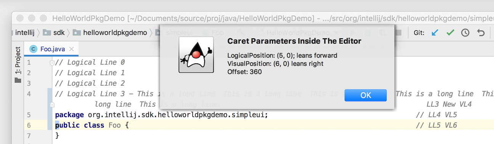
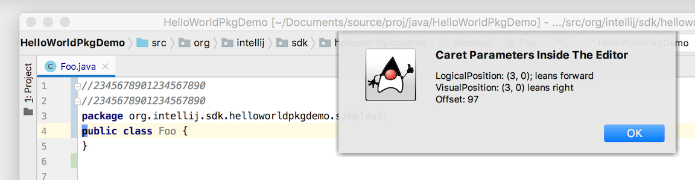

Editor Coordinate Systems - Caret Positions and Offsets
The previous tutorial Working with Text demonstrated how to use actions to access a caret placed in a document open in an editor. The examples replaced selected text in a document by using information about the caret.
Every caret has a set of properties describing its position in one of several coordinate systems. This tutorial describes how to access information about the caret(s) in an editor. The tutorial presents the following sections:
- Introduction
- Caret Positions from the CaretModel and Caret Objects
- Editor Coordinate Systems
- Displaying Caret Positions
Introduction
In this tutorial, the editor_basics code sample is used to explore caret positions.
In particular, the Caret Position action added by editor_basics to the editor context menu is used to retrieve information about the current caret position.
A keyboard shortcut can also initiate the action.

The source code for the Java class behind the menu action is EditorAreaIllustration.
The focus of discussion will be the EditorAreaIllustration.actionPerformed() method.
For more information about creating action classes, see the Actions Tutorial which covers the topic in depth.
Caret Positions from the CaretModel and Caret Objects
The properties of a caret can be accessed by obtaining an instance of the CaretModel object.
As in the Working with Text tutorial, the AnActionEvent is used to get the Editor object.
The Editor object provides access to the CaretModel object, as shown below:
public class EditorAreaIllustration extends AnAction {
@Override
public void actionPerformed(@NotNull final AnActionEvent e) {
// Get access to the editor and caret model. update() validated editor's existence.
final Editor editor = e.getRequiredData(CommonDataKeys.EDITOR);
final CaretModel caretModel = editor.getCaretModel();
}
}
Editor Coordinate Systems
When a Document is opened, the Editor assigns an internal, zero-based coordinate system to lines and columns in the Document.
The first line in a Document and the first character in each line are assigned the zero position.
Every character in a Document is assigned an Offset, which is a zero-based count of the characters from the beginning of the file to that character.
These LogicalPosition coordinates are used to describe the line and column number for a caret position.
Note that the Logical Position coordinate system is different from the editor UI, which is one-based rather than zero-based.
Logical Position coordinates and other coordinate systems discussed in this tutorial can be used to characterize any location in an Editor, not just carets.
Hints used for code insights are characterized in terms of these coordinates, for example HintManager.getHintPosition().
Custom visual elements displayed in an Editor, called Inlay objects, are also expressed in terms of these coordinate systems.
The diagram below shows the Logical Position coordinate system applied to some example content. The character “s” in the red box represents placing the cursor on that character. It has the caret position of line 1, column 9, and Offset 28. More about caret Offsets is discussed below.
The Multiple Carets documentation covers the subject of more than one caret in an Editor.
For this tutorial, be aware there may be more than one caret in an Editor at any given time.
Consequently, examples use the Primary Caret in an Editor.
If there is only one caret in an Editor, it is the Primary Caret.
For the case of multiple carets in an Editor, the Primary Caret is the one on which query and update methods in the model operate at the moment.
Caret Logical Position
The caret Logical Position is a zero-based, (line and column) position of the caret in the Editor.
Logical Position information is obtained from the LogicalPosition object for that caret.
The Logical Position line number of a caret ignores the effects of settings that change the presentation of a Document within the Editor.
Examples of these settings are Code (Line) Folding and Soft Line Wrap.
These effects mean regardless of whether one or more lines in an Editor are folded or soft-wrapped, the caret Logical Position line number will not change.
In the example Java file below, Logical Position line numbers 1-3 are folded into line 0.
The caret - a blue block - is placed on the letter “p” in “public.”
Using the editor_basics Caret Position action to inspect the caret, it is reported to be at Logical Position (5,0) - which is line 5, character 0 - the first character in the line.
This means that caret Logical Position is not changed by Code Folding:
However, note that applying Code Folding does change the reported Visual Position of the caret even if the Logical Position stays constant.
More about Visual Position is discussed below.
However, it’s clear combinations of Code Folding and Soft Wrap means that one Logical Position of a caret could map to multiple Visual Positions.
The Editor interface provides methods to work with a caret Logical and Visual Position, such as the method Editor.logicalToVisualPosition().
Caret Visual Position
A caret’s Visual Position differs from Logical Position in that it takes into account editor presentation settings such as Code Folding and Soft Line Wrap.
In doing so, VisualPosition counts - zero-based - the lines of a Document that can be displayed in an Editor.
Consequently, Visual Positions can’t be uniquely mapped to Logical Positions or corresponding lines in the underlying Document.
For example, Soft Line Wrap affects the Visual Position of succeeding lines. In the image below, Soft Line Wrap is applied to Logical line three. With the caret placed at the same character location as in previous tests, it is evident the Logical Position has not changed. However, the Visual Position line number has increased by one! The comments on each line illustrate how the Soft Wrap portion of Logical line three is evaluated as Visual Position line four, as though it was a separate line.

The Logical and Visual Position objects for a caret are obtained from the Caret object, as shown in the code snippet below.
public class EditorAreaIllustration extends AnAction {
@Override
public void actionPerformed(@NotNull final AnActionEvent e) {
// Get access to the editor and caret model.
final Editor editor = e.getRequiredData(CommonDataKeys.EDITOR);
final CaretModel caretModel = editor.getCaretModel();
final Caret primaryCaret = caretModel.getPrimaryCaret();
LogicalPosition logicalPos = primaryCaret.getLogicalPosition();
VisualPosition visualPos = primaryCaret.getVisualPosition();
}
}
Caret Column Position
The Column Position is a count of characters from the beginning of a Logical (Position) line to the current caret position in that line. Characters are counted using a zero-based numbering system, so the first character of a line is numbered zero. Note that Column Position is different from the editor UI, which uses a one-based numbering scheme.
Column Position includes:
- Whitespace, such as tabs. Tabs can occupy multiple columns, up to the tab size set for the editor.
- The character selected by the caret.
Caret Lean
The Column Position of a caret is the boundary between two characters. A caret can be associated with either a preceding or succeeding character. The association is important in bidirectional text, where mapping from Logical Column Position to Visual Column Position is not continuous.
As defined in the LogicalPosition class, if a caret position is associated with a succeeding character it Leans Forward.
Otherwise, it is associated with the preceding character.
As defined in the VisualPosition class, if a caret position is associated with a succeeding character it Leans Right.
Otherwise, it is associated with the preceding character.
Examples of Caret Lean
In the example below, placing a (blue) block caret on the first visible character in Logical line three produces a column position of 0 for both Visual and Logical Positions. Note that the text is unidirectional in this example. In the Logical Position the caret leans forward, meaning it is associated with the succeeding character in the Logical line. For the Visual Position the caret leans right, indicating its association with the succeeding character in the Visual line.

Consider the Java snippet below, and use the editor_basics Caret Position action to report caret information at each step.
Be sure to use the keyboard shortcut to invoke the action so that the caret position is not disturbed.
The line containing the String variable declaration contains bidirectional text.
Starting on the left end of the line, and using the arrow key to advance a line-shaped cursor to between the (" characters reveals discontinuities in caret coordinate column positions.
- After the caret first moves from between
g(to between(", the Logical and Visual Positions have equal column positions of 28, and neither leans. Note the value of the caret positions you measure may have different starting values because of line indentation, but the sign and magnitude of the changes in position will be the same. - Advancing the caret once more does not appear to visually move the cursor. However, the Logical Position column increases to 61, and although the Visual Position column does not change, it leans right.
- Continuing to advance the cursor (to the right) through the string causes the Logical Position column to decrease, and the Visual Position column to increase.
- Once the cursor advances to between the
".characters, the Logical Position column position is again 28, and leans forward. The Visual Position column position is now 61. - Moving the caret right once more does not appear to visually advance the cursor. However, the Logical Position and Visual Position column values are both 61, and both lean.
- As the cursor advances to the right, both Logical and Visual column values increase.
import static java.nio.charset.StandardCharsets.UTF_8;
public void showNow() {
//234567890123456789012345678901234567890123456789012345678901234567890
String str = new String("تعطي يونيكود رقما فريدا لكل حرف".getBytes(), UTF_8);
System.out.println( str );
}
The apparent discontinuity in Logical Position is because the RTL portion of the string is treated (or counted) in the logical character order in which it would be written. The apparent continuity in Visual Position is because the RTL portion of the string is counted in the visual order in which it is displayed in the code.
Caret Offset
The Offset of a caret is a character count from the beginning of a Document to the caret position.
Caret offsets are always calculated in terms of Logical Position.
The caret Offset includes:
- The first (0th) character in a document.
- Whitespace characters, including newline and tabs.
- Any characters after end-of-line if the IDE settings permit them. (Preferences | Editor | General | Virtual Space)
- The character selected by the caret.
The example below demonstrates the Offset of a caret placed at the first character of Logical line one. Note the Offset is 22, which is one greater than the number of visible characters on line zero, and the first character on line one. This apparent discrepancy is actually correct because the Offset includes the newline character for line zero.
Displaying Caret Positions
To display the values of caret Logical and Visual positions, and Offset, a
Messages.showInfoMessage() method shows them in the form of notification as the action is performed.
public class EditorAreaIllustration extends AnAction {
public void actionPerformed(@NotNull final AnActionEvent e) {
// Get access to the editor and caret model.
final Editor editor = e.getRequiredData(CommonDataKeys.EDITOR);
final CaretModel caretModel = editor.getCaretModel();
// Getting the primary caret ensures we get the correct one of a possible many.
final Caret primaryCaret = caretModel.getPrimaryCaret();
// Get the caret information
LogicalPosition logicalPos = primaryCaret.getLogicalPosition();
VisualPosition visualPos = primaryCaret.getVisualPosition();
int caretOffset = primaryCaret.getOffset();
// Build and display the caret report.
StringBuilder report = new StringBuilder(logicalPos.toString() + "\n");
report.append(visualPos.toString() + "\n");
report.append("Offset: " + caretOffset);
Messages.showInfoMessage(report.toString(), "Caret Parameters Inside The Editor");
}
}